坐标可取作0。然后，他把被积函数按
坐标可取作0。然后，他把被积函数按4．位势理论
偏微分方程这门学科的发展受到另一类物理研究的推进。18世纪的主要问题之一是确定一个物体对另一物体作用的万有引力的大小，最重要的情况是，太阳对一个行星，地球对它外部或内部的一个质点，地球对另一连续质量的引力。当两个物体的质量比起其大小来差得非常远时，它们是可以当作质点处理的；但是在别的情况下，特别是在地球吸引一个质点时，就必须考虑地球的大小。很显然，如果要计算地球的质量分布对一质点或对另一质量分布的万有引力，就必须知道地球的形状。虽然它的精确形状仍是一个研究的课题（第21章第1节），但在1700年左右就已经清楚地知道它一定是某种形状的椭球体，也许是一个扁球体（一椭圆绕其短轴旋转形成的椭球体）。在计算实心扁球体对一个外部质点和一个内部质点所作用的引力时，都不能把扁球体质量看作集中在中心。
麦克劳林在1740年关于潮汐的获奖论文和他的《流数论》（Treatise of Fluxions，1742）中证明了对以等角速度转动的密度均匀的流体，扁球形是一种平衡形状。后来，麦克劳林综合地证明了给定两个共焦的均匀旋转椭球体，它们对外部同一质点的吸引力，当这个质点位于旋转轴的延长线上或位于赤道平面内时，与两物体的体积成比例。一些别的受局限的结果在19世纪中也由艾沃里（James Ivory，1765—1842）和沙勒（Michel Chasles）用几何方法建立。
牛顿、麦克劳林和其他人用于万有引力问题的几何方法仅仅对于特殊的物体和特殊位置上的被吸引质量才是有效的。这种方法很快就让位给分析方法了，在克莱罗的文章中，特别是在他的名著《关于地球形状的理论》（Théorie de la figure de la terre，1743）中，首次发现了这种方法，在该书中他同时考虑了地球的形状和万有引力两者。
让我们先看一下关于分析上确切阐述的一些事实。一个连续体对一个被看作质点的单位质量P所作用的万有引力是对构成该物体的全体小质量所作用的力的总和。如果物体的小体积元
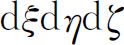
（图22.2）如此之小，以至可看作集中在点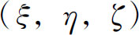
的一个质点，此外，如果P的坐标是（x，y，z），那么密度为ρ的小质量对单位质点的引力是从P指向小质量的一个向量，按牛顿万有引力定律，这向量的分量是（第21章第7节）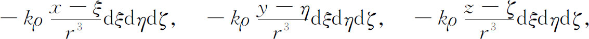
其中k是牛顿定律中的常数，并且
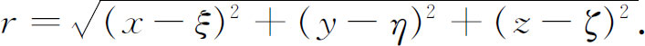
当然ρ可以是ξ，η，ζ的函数，或者在均匀物体的情况下是一个常数。
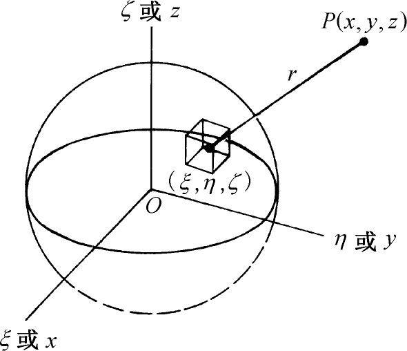
图22.2
整个物体对P处单位质量的引力分量是
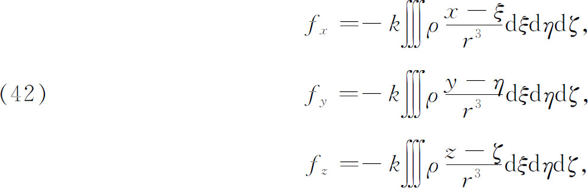
其中积分展布在整个吸引体上。这些积分是有限的，当P在吸引体内部时也是正确的。
为了代替分别处理力的每个分量，可引入一个函数
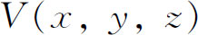
，它对x，y，z的偏导数分别是力的三个分量。这个函数就是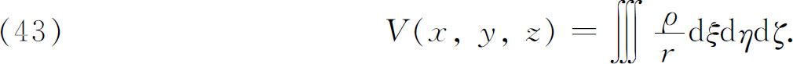
在积分号下对包含在r内的x，y，z求微分可得
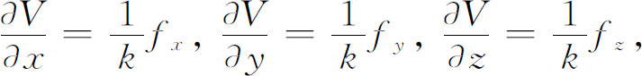
这些方程当P在吸引体内部时也成立。函数V称为势函数。当包含三个分量fx，fy和fz的问题能化归为对V的问题时，这样用一个函数代替三个函数来做是很有好处的。
如果知道物体内部的质量分布，亦即ρ是ξ，η，ζ的已知函数，如果又知道物体的精确形状，有时就能通过实际计算积分值来算出V。可是对大多数形状的物体，这个三重积分是不能用简单函数积出来的。此外，我们也不知道地球或其他物体内部的真实的质量分布。因此V必须用其他方法来确定。关于V的主要事实是，对吸引体外部的点（x，y，z），它满足偏微分方程
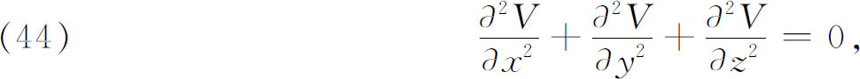
注意其中ρ不出现。这个微分方程称为位势方程，也叫做拉普拉斯方程。
从势函数能够导出力的想法，甚至“势函数”这个术语本身，都由丹尼尔·伯努利在《流体动力学》（Hydrodynamica，1738）中用过。位势方程本身首次出现在欧拉1752年编写的重要论文《流体运动原理》（Principles of the Motion of Fluids）(28)中。在处理流体内任一点的速度分量u，v和w时，欧拉曾证明
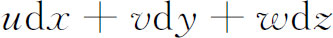
必定是一个恰当微分。他引进函数S，使得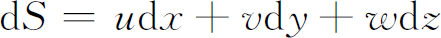
，于是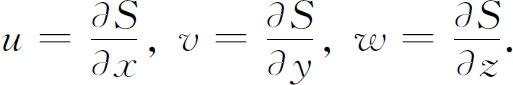
但是不可压缩流体的运动遵从所谓连续性定律，即
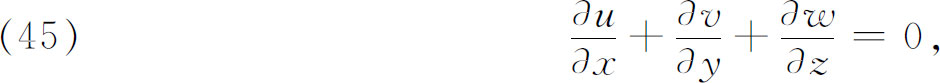
这在数学上表达了运动过程中既没有物质被消灭也没有物质产生这个事实。于是由此推得
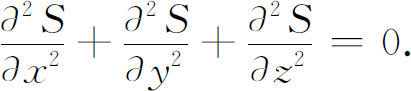
怎样一般地解这个方程呢，欧拉说，不知道。所以他仅仅考察S是x，y，z的多项式的特殊情况。函数S后来（1868）被亥姆霍兹（Hermann von Helmholtz）称为速度势。拉格朗日在1762年发表的一篇文章中(29)重新得到了所有这些量，这是从欧拉那里接受过来而未正式申明的，虽然他确实改善了思路和表达的条理。
在我们能够研究为了求解代表万有引力的位势方程而做的工作之前，我们必须回顾一下那些通过积分（42）或它在别的坐标系中的等价公式来直接计算吸引力数值的那些努力。
勒让德在写于1782年而发表于1785年的题为《球状体吸引力的研究》（Recherches sur l'attraction des sphéroïdes）(30)的论文中，对旋转体的引力感兴趣，证明了定理：如果旋转体对位于轴的延长线上每一外点的引力已知，则它对每一外部点的引力也就知道了。他先通过
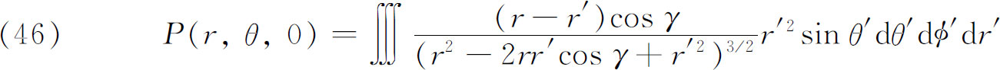
表示沿矢径r方向的吸引力的分量，这里（图22.3）r是被吸引点的矢径，r′是吸引物体上的任一点的矢径，γ是这两个矢径在物体中心处的夹角。因为物体是绕z轴旋转生成的图形，故外点的坐标可取作0。然后，他把被积函数按
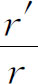
的方幂展开。为了做到这一点，他把分母写成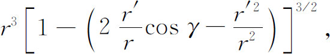
再把方括号内的量移到分子上去，然后用二项式定理来展开，把圆括号内的量作为二项式的第二项。除开体积元之外，勒让德得到被积表达式是级数
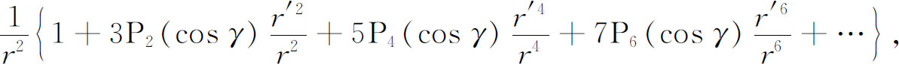
其中系数P2，P4，…都是cosγ的有理整函数。这些函数就是现在我们所谓的勒让德多项式，或拉普拉斯系数，或带调和函数。勒让德给出了这些函数的形式，从而可以推得一般的Pn，即
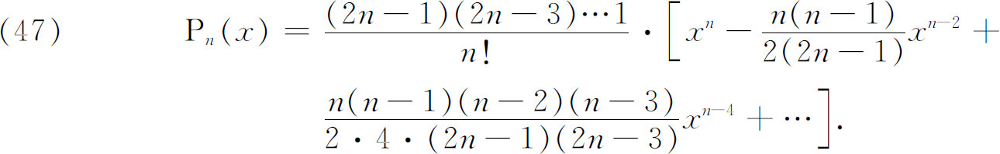
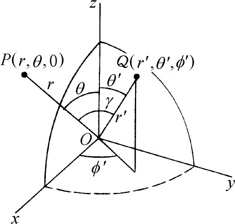
图22.3
他于是就能对r′求积分而得到
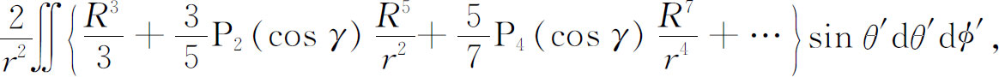
此处
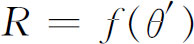
是r′在给定的θ′处的值（它不依赖于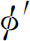
）。他于是又需对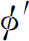
求积。为此他利用(31)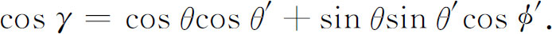
在建立了辅助的结果
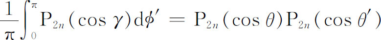
之后，他终于得到了
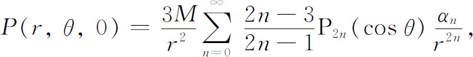
其中
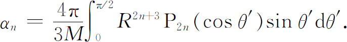
积分值依赖于子午线
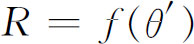
的形状。然后，勒让德从上面的结果并在同拉普拉斯通信的基础上得到了关于这个问题的势函数的表达式，并从势推出垂直于矢径的引力分量。
在1784年写的第二篇文章(32)中，勒让德推导出函数P2n的一些性质。例如，对每一个关于x2的次数低于n的x2的有理整函数都有
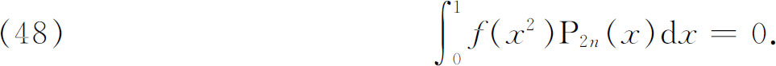
如果n是任一正整数，则
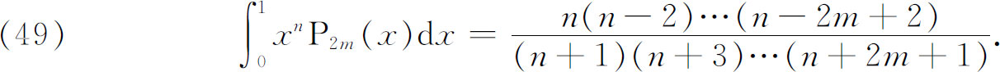
如果m和n是正整数，则
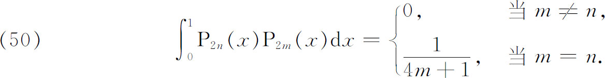
他还证明了每个P2n的零点都是实数，彼此不相同，关于0对称，且绝对值小于1。还有当0＜x＜1时，
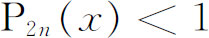
。然后，借助正交条件（50），他用级数逐项积分法证明了一个给定的x2的函数能用唯一的方式表示成函数
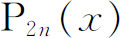
的级数。最后，运用他的多项式的这些和其他一些性质，勒让德回到了万有引力的主要问题上，并用位势的表达式（43）及旋转流体质量的平衡条件，他得到该质量的、表示成他的多项式的级数形式的子午线方程。他相信这个方程包括了关于旋转球体的一切可能的平衡形态。
现在拉普拉斯登场了。他写了几篇关于旋转体引力的论文（1772年写，发表于1776年；1773年写，发表于1776年；1775年写，发表于1778年），文中他用的是力的分量而不是势函数。受到勒让德写于1782年发表于1785年那篇论文的激发，拉普拉斯写了著名的值得注意的第四篇文章《球状体和行星状物体的引力理论》（Théorie des attractions des sphéroïdes et de la figure des planètes）(33)。文中没有提到勒让德，拉普拉斯研究的是与勒让德的旋转图形不同的任意球状体的引力问题，所谓球状体（其表面），拉普拉斯是指用r，θ， 的一个方程给出的任一曲面。
的一个方程给出的任一曲面。
他从下述定理出发：任意物体作用在它外部一点的引力的势V，若用球坐标r，θ，
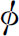
表示并取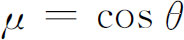
时，必定满足位势方程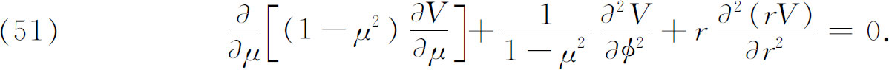
拉普拉斯在这里没有说明他是怎样得到这个方程的。在后来的一篇论文(34)中他给出直角坐标形式（44）。完全可以肯定，他是先得到直角坐标形式然后再从它推出球坐标形式的。事实上，两种形式已经由欧拉和拉格朗日给出了，但是拉普拉斯没有提到他们。他可能不知道他们的工作，虽然这是可疑的。
在1782年的文章中，拉普拉斯令
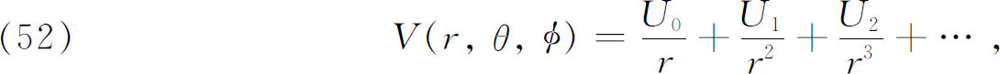
这里
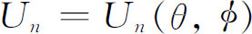
，他将它代入（51），则单个的Un满足(35)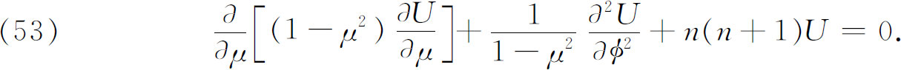
借助勒让德的P2n，他就能证明
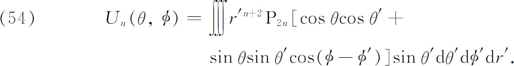
接着拉普拉斯利用这个结果与（52）来计算与一球有小差异的球状体的势。他把球状体的表面方程写成
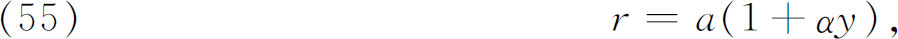
这里α很小，而y是在球状体上θ′和
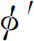
的函数。拉普拉斯假定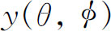
能展成函数项级数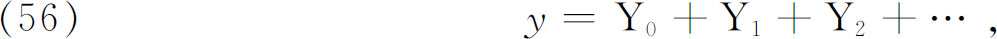
其中Yn是θ， 的函数，满足微分方程（53）。这里他得到的结果首先是
的函数，满足微分方程（53）。这里他得到的结果首先是
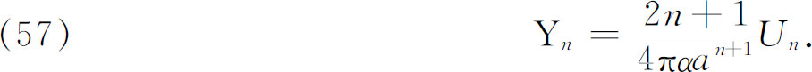
于是，这些Yn可用到（52）中，展开式（56）还可改写成
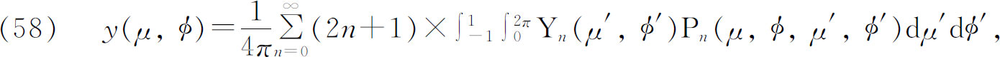
其中
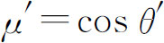
。这时，用y的值，他就有了一个关于（55）中的r的表达式，而利用这个结果和（54）中的Un，他就得到了（52）中的V。拉普拉斯在这里并没有考虑把θ，
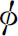
的任一函数展开成Yn的级数的一般问题。他在这里所做的和后来的文章中，深信这样的表达式是可能的并且是唯一的。他只处理和的有理整函数，因而他对于一般结果的需要是有限制的。他证明了基本的正交性质但是，在他的《天体力学》第二卷里，他证明θ和 的任意函数能展开成Un（或Yn）的级数，并且证明（59）蕴涵着展开式的唯一性。
的任意函数能展开成Un（或Yn）的级数，并且证明（59）蕴涵着展开式的唯一性。
拉普拉斯还写了关于球状体的引力和地球形状的几篇别的论文（例如，1783年写，发表于1786年；1787年写，发表于1789年）；在这些文章中用了球函数展开式。在最后的那篇文章中，拉普拉斯给出了直角坐标形式的位势方程，但他作了一个错误的结论，他假设这个方程当被吸引的质点位于物体内部时也成立。这个错误由泊松加以更正（第28章第4节）。
18世纪80年代勒让德继续进行他的研究。在写于1790年的第四篇论文(36)中，他对奇数n引进了。（47）给出的的表达式对一切n都是正确的，勒让德证明了对任何正整数m和n，成立
后来，他也引进了球函数。就是说，他令Yn是展开式中zn的系数，这里。然后令和，他就证得
更高的项包含Pn的更高阶导数。这个方程等价于
其中m是上标而不是指数。满足
并且与
只差一个常数因子。这样引进的现在称为连带勒让德多项式。然后，勒让德证明了
和
这篇文章中用到了满足勒让德微分方程的事实。
还有许多包含着勒让德多项式和球调和函数的别的特殊结果，是由勒让德、拉普拉斯和其他人得到的。一个基本结果是1816年(37)得到的罗德里格斯（Olinde Rodrigues，1794—1851）公式
拉普拉斯解球状体引力位势方程方面的工作是这个课题上浩瀚工作的开始。他和勒让德在关于勒让德多项式、连带勒让德多项式及球（球面）调和方面的工作同等重要，因为更加任意的函数都能表示成和Yn的无穷级数。这一系列函数类似于三角函数，对后者丹尼尔·伯努利曾断言它们能用来表示任意函数。至于函数类的选择则要依赖于被解的微分方程以及初值和边界条件。当然，对这些函数以前曾经完成了很多工作，过去又做过很多工作，才使得它们在解偏微分方程中更为有用。